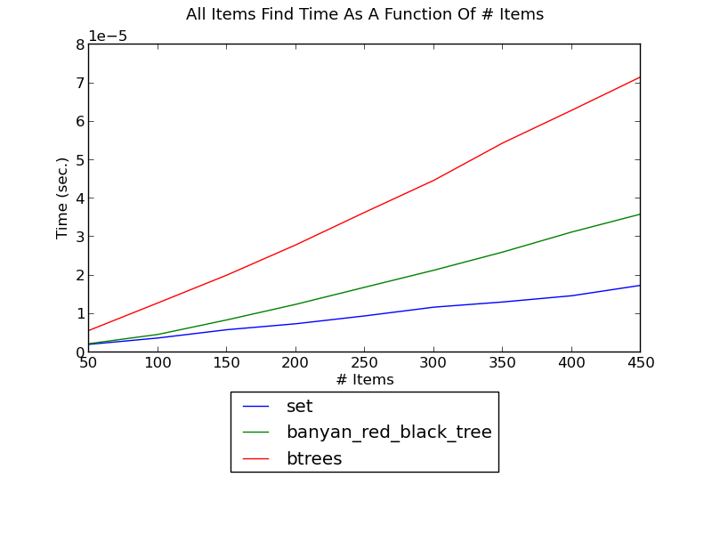
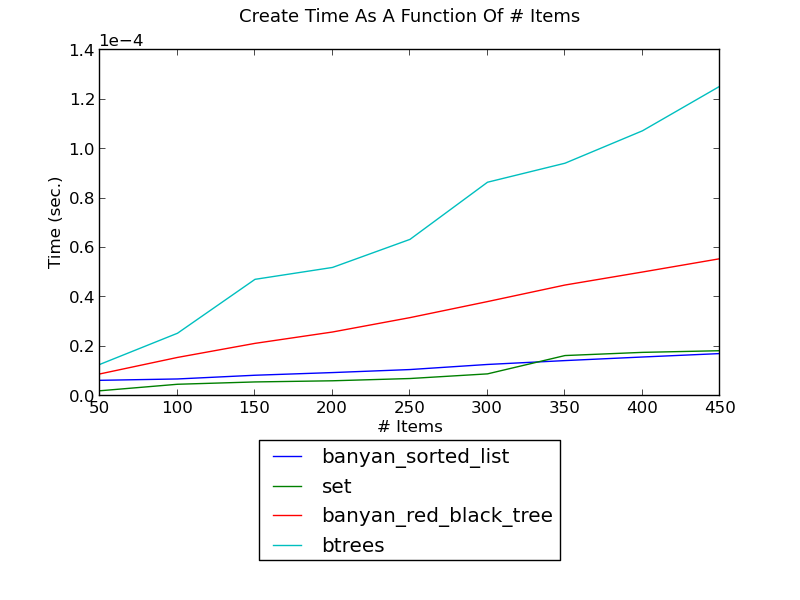
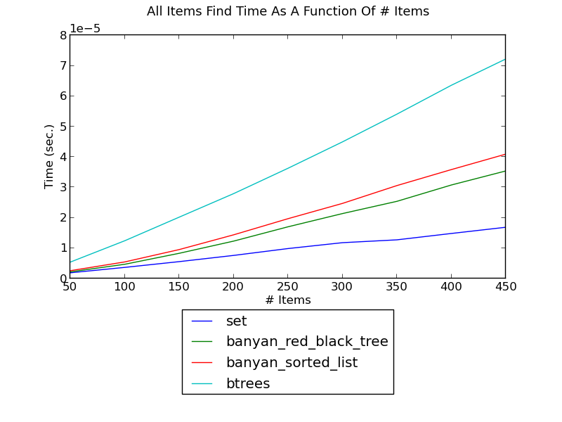

The next table gives the well-known asymptotic running times of various operations using different mapping algorithms. Using such a table, together with experimentation, the appropriate algorithm for each setting can be found.
| Operation | Red-Black Tree / Btree | Splay Tree | Ordered list | Hash |
|---|---|---|---|---|
| insertion/removal - worst case | O(log(n)) | O(n) | O(n) | O(n) |
| insertion/removal - amortized worst case | O(log(n)) | O(log(n)) | O(n) | O(n) |
| insertion/removal - average case | O(log(n)) | O(log(n)) | O(n) | O(1) |
| lookup - worst case | O(log(n)) | O(n) | O(log(n)) | O(n) |
| lookup - amortized worst case | O(log(n)) | O(log(n)) | O(log(n)) | O(n) |
| lookup - average case | O(log(n)) | O(log(n)) | O(log(n)) | O(1) |
| lookup - repeated case | O(log(n)) | O(1) | O(log(n)) | O(n) |
| sorted iteration | O(n) | O(n) | O(n) | O(n log(n)) |
| min/max - worst case | O(log(n)) | O(n) | O(1) | O(n) |
| min/max - amortized case | O(log(n)) | O(n) | O(1) | O(n) |
| erasing a k-slice - worst case | O(log(n)^2 + k) | O(n) | O(n) | O(n) |
| updating a k-slice - worst case | O(log(n) + k) | O(n) | O(log(n) + k) | O(n) |
The tests measure the performance of sets and dicts with integer keys. The following implementation are compared:
Note
To run the performance tests on your system, from the source directory, type
$ python setup.py install performance_test document
or
$ sudo python setup.py install performance_test document
In general, for memory-residing mapping collections, the appropriate algorithm depends on whether sorted iteration is required (as well as similar operations described in Methods below, and some more specialized operations described in Updators below):
There are some specialized cases where other tree-based containers are better.
From the table above, it is apparent that hash-based containers are basically O(1) on lookup/insertion/removal operations, whereas trees are basically O(log(n)). Conversely, iterating in order over a hash-based container is generally O(n long(n)), wherease trees are O(n). Thus, if a combination of modifications and sorted iteration is required, trees are a good choice; otherwise, a hash-based container is a better choice.
Hash-based containers are not very well suited for combinations of modifying containers and iterating over their items in sorted order, even if the iterations are relatively infrequent.
The following figure shows the running time of inserting integers one by one into a dict and iterating in sorted order after every insertion, as a function of the number of integers (see _set_insert_sort.py for the source):
(see Insert-Sort Performance for fuller versions and discussion.)
Without sorted iteration, for simple lookup or modification, the situation is reversed: hash-based containers do better than tree-based containers.
- The following figure shows the running time of finding a key in a set as a function of the size of the set (see _set_find.py for the source):
(see Find Performance for fuller versions and discussion.)
- The following figure shows the running time of inserting integers and then erasing them, as a function of the number of integers (see _set_insert_erase.py for the source):
(see Insert-Erase Performance for fuller versions and discussion.)
Sorted lists are just about the most memory-efficient mapping containers possible. In addition, they are well suited for non-modifying operations: creation, lookup, and iteration; from the table above it is apparent that they are far less suited for modifying operations.
banyan.SORTED_LIST is the default algorithm for banyan.FrozenSortedSet and banyan.FrozenSortedDict, but this algorithm might also be appropriate for cases where updates are allowed, but are relatively infrequent.
Sorted lists do well for non-modiying operations:
The following figure shows the running time of creating a set of integers as a function of the number of integers (see _set_create.py for the source):
(see Creation Performance for fuller versions and discussion.)
The following figure shows the running time of iterating over a set’s integers in sorted order as a function of the number of integers (see _set_it.py for the source):
(see Sorted Iteration Performance for fuller versions and discussion.)
The following figure shows the running time of finding each integer in a set, as a function of the number of integers (see _set_find.py for the source):
(see Find Performance for fuller versions and discussion.)
Sorted lists do not do well for modiying operations. The following figure shows the running time of inserting integers and then erasing them, as a function of the number of integers (see _set_insert_erase.py for the source):
(see Insert-Erase Performance for fuller versions and discussion.)
In some settings, keys are accessed completely randomly. In other settings, at most time periods, only a small set of keys is access. In the latter settings, splay-based trees have some advantages. In the former settings, they do not balance trees as well as red-black trees, and, more importantly, they require about twice as many comparisons per search.
The following figure shows the running time of finding integers such that first one integer is found repeatedly, then the next one, and so forth, as a function of the number of integers (see _set_find_local.py for the source):
(see Local-Find Performance for fuller versions and discussion.)
The following figure shows the running time of finding integers one after another, as a function of the number of integers (see _set_insert_erase.py for the source):
(see Find Performance for fuller versions and discussion.)
Naturally, tree-based containers are efficient for operations pertaining to specific key ranges, but the appropriate methods need to be used.
It’s possible to earse all keys in a range from a set by creating a new set without those keys:
>>> t = set([key for key in t if key < begin or key >= end])
This has linear complexity, however. In general, balanced trees support efficient split and join operations, and such erases can be more efficiently implemented using them. This is the rationale for an extended remove for sets:
>>> t.remove(begin, end)
and an extended del for dicts:
>>> del t[begin: end]
The following figure shows the running time of erasing a fixed-size slice in a set as a function of the size of the set (see _set_erase_slice.py for the source):
(see Erase-Slice Performance for fuller versions and discussion.)
Just as in the previous point, slices can be updated more efficiently and clearly than by iterating over all items. For example: here is a linear-complexity method to increment the values of all keys in a range:
>>> t = dict([(k, v + 1) if begin <= k < end else (k, v) for (k, v) in t.items()])
In a search tree, this can be replaced with the more efficient version:
>>> t[begin: end] = [value + 1 for value in t[begin: end]]
which performs some logarithmic operations for finding the range boundaries, and iteration over the slice.
The following figure shows the running time of updating a fixed-size slice in a set as a function of the size of the set (see _dict_update_slice.py for the source):
(see Update-Slice Performance for fuller versions and discussion.)
Trees can be augmented to support new functionality efficiently (see Augmenting Trees for a detailed explanation).
The following figure shows the running time of inserting integer intervals one by one into a set and, and finding the intervals overlapping the inserted interval after each insertion, as a function of the number of intervals (see _set_insert_overlapping_intervals.py for the source):
(see Insert-Overlapping Performance for fuller versions and discussion.)
bx is a package dedicated towards these types of operations, and Banyan uses an updator on a regular red-black tree. If k intervals overlap an interval, the complexity of finding them using either implementation is only k log(n).
The following figure shows the running time of inserting integers one by one into a set and, and finding the rank of the inserted integer in the set after each insertion, as a function of the number of integers (see _set_insert_rank.py for the source):
(see Insert-Overlapping Performance for fuller versions and discussion.)
The following figure shows the running time of inserting integers one by one into a set and, and finding the minimum gap of the inserted integers in the set after each insertion, as a function of the number of integers (see _set_insert_min_gap.py for the source).
(see Insert-MinGap Performance for fuller versions and discussion.)
Augmentation does not alter the running time of non-modifying operations (e.g., __contains__), and while it does not change the order of growth of modifying operations, it adds a multiplicative factor. For the predefined classes, the multiplicative factor is small. Due to the dynamic nature of Python, however, pure-Python augmentation incurrs a significant multiplicative factor, and is therefore primarily useful for very large trees.
The following figure shows the find time of a tree with an updator; it is unaffected:
The following figure shows the modification time of a tree with an updator; due to the dynamic nature of Python, it is somewhat adversely affected: